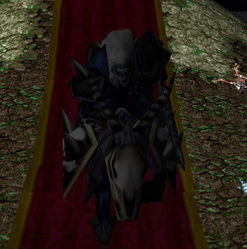

Use your W when he lands his first hit, or you hit him, this way you will block some of pull and first hits damage.
Try to use your R and T when he spawns shades, this 2 spells combined should kill them and make you relatively safe.
Start your combo with F, you might kill him before silence is off(since its weak boss).